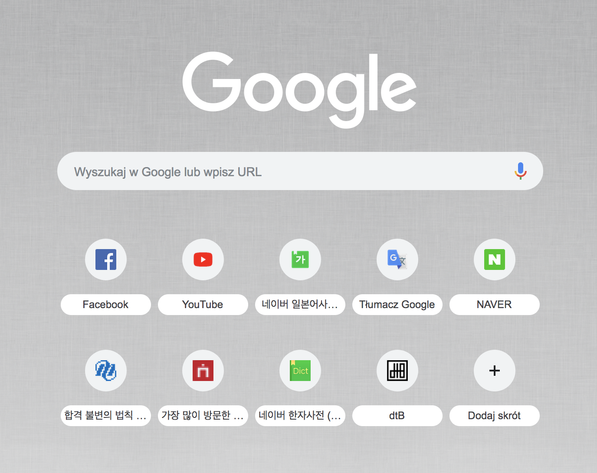

#Gibberish 15
드디어 이 페이지의 favicon을 설정했다!
직접 디자인한 마크이다. 개인적으로 매우 맘에 든다.
dragontony1 Blog의 d, t, B를 따와 합친 모양이다.
수능이 끝나면 대대적인 블로그 개편에 들어갈 생각인데, 앞으로는 'dragontony1 Blog' 풀네임보다 dtB라는 약자와 이 마크만을 이용하고자 한다. 사실 dragontony1은 필자가 이메일이나 여러 SMS, 웹사이트 계정 등의 아이디로 자주 쓰는 문구인데, 생각해보니 블로그 이름으로 쓰기엔 약간 cringy한 면이 없잖아 있는 것 같다.
참고로 dragontony1이라는 문구는 약 8년 전, 구글 계정을 만들면서 부모님과 상의해 결정한 것이다. 별 뜻은 없고, 2000년 생 용띠이고 당시 유치원 때부터 줄곧 사용해오던 영어 이름이 Tony였어 dragon과 Tony를 합쳐 dragontony를 만들었는데, 아이디에 숫자 하나 정도는 포함시켜야 할 것 같아 1을 붙였던 것이다.
수능 전까진 시범 운용 차원에서 https://dragontony1.github.io/dtB/archives/SS1/main.html 여기를 비롯한 일부 페이지에만 적용하기로 했다.
필자의 구글 크롬 첫 화면. 블로그 마크가 떡하니 있는게 왠지 모르게 흐뭇하다.
아, 그리고 지금 수능 전 마지막 주말이다. 공부할게 아직 산더미인데 굉장히 걱정이다. 다음 블로그 업데이트는 수능이 끝나고가 될 것 같다. 그때 다음 게시글을 작성하면서 무슨 표정을 짓고 있을지 궁금하다.